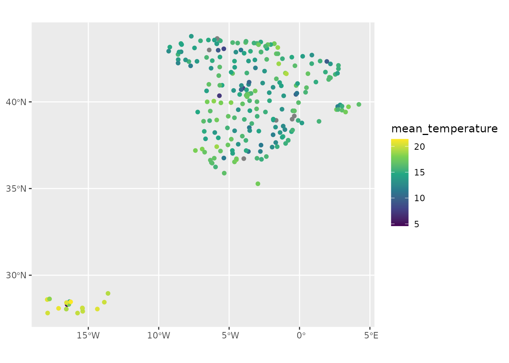
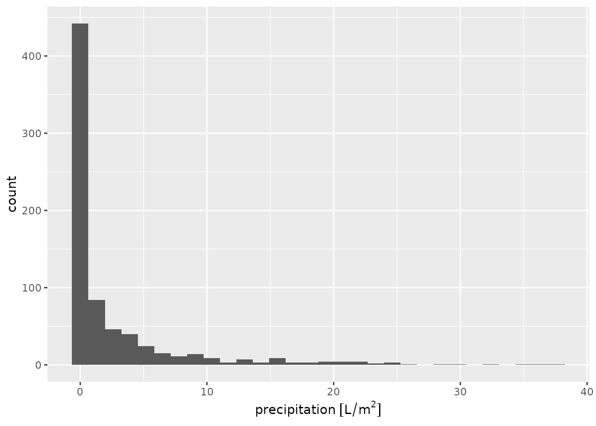

library(meteospain)
library(ggplot2)
library(ggforce)
library(units)
#> udunits database from /usr/share/xml/udunits/udunits2.xml
library(sf)
#> Linking to GEOS 3.10.2, GDAL 3.4.1, PROJ 8.2.1; sf_use_s2() is TRUE
library(keyring)AEMET is the Spanish
national meteorologic service, and is the national meteorology authority
providing quality data for public and research use, as well as
prediction products and disaster warning system. meteospain
only access to the automatic meteorological stations network data.
meteospain offers access to the AEMET API at different
temporal resolutions:
In “daily”, a start_date (and optionally an
end_date) arguments must be provided, indicating the period
from which retrieve the data.
In “monthly” and “yearly”, only the years in start_date and
end_date are used, returning all year monthly or yearly
values (i.e start_date = as.Date("2020-12-01") is
the same as start_date = as.Date("2020-01-01") as both will
return all 2020 measures).
meteospain access the data in the AEMET API collecting
all stations. If a character vector of stations codes is supplied in the
stations argument, a filter step is done before returning
the data to maintain only the stations supplied.
The exception for this are “monthly” and “yearly” temporal resolutions. AEMET API only allows for one station to be retrieved.
AEMET API only allow access to the data with a personal API Key. This
token must be included in the api_key argument of
aemet_options function.
To obtain the API Key, please visit https://opendata.aemet.es/centrodedescargas/inicio and
follow the instructions at “Obtencion de API Key”.
It is not advisable to use the keys directly in any script shared or publicly available (github…), neither store them in plain text files. One option is using the keyring package for managing and accessing keys:
install.packages('keyring')
library(keyring)
key_set('aemet') # A prompt asking for the secret (the API Key) will appear.
# current day, all stations
api_options <- aemet_options(
resolution = 'current_day',
api_key = key_get('aemet')
)
api_options#> $resolution
#> [1] "current_day"
#>
#> $start_date
#> [1] "2023-03-22"
#>
#> $end_date
#> [1] "2023-03-22"
#>
#> $stations
#> NULL
#>
#> $api_key
#> [1] "my_api_key"
# daily, all stations
api_options <- aemet_options(
resolution = 'daily',
start_date = as.Date('2020-04-25'), end_date = as.Date('2020-05-25'),
api_key = key_get('aemet')
)
api_options#> $resolution
#> [1] "daily"
#>
#> $start_date
#> [1] "2020-04-25"
#>
#> $end_date
#> [1] "2020-05-25"
#>
#> $stations
#> NULL
#>
#> $api_key
#> [1] "my_api_key"
# monthly, only one station because AEMET API limitations
api_options <- aemet_options(
resolution = 'monthly',
start_date = as.Date('2020-04-25'), end_date = as.Date('2020-05-25'),
station = "0149X",
api_key = key_get('aemet')
)
api_options#> $resolution
#> [1] "monthly"
#>
#> $start_date
#> [1] "2020-01-01"
#>
#> $end_date
#> [1] "2020-12-31"
#>
#> $stations
#> [1] "0149X"
#>
#> $api_key
#> [1] "my_api_key"Accessing station metadata for AEMET is simple:
get_stations_info_from('aemet', api_options)
#> Simple feature collection with 291 features and 5 fields
#> Geometry type: POINT
#> Dimension: XY
#> Bounding box: xmin: -17.91528 ymin: 27.73583 xmax: 4.215556 ymax: 43.78611
#> Geodetic CRS: WGS 84
#> # A tibble: 291 × 6
#> service station_id station_name stati…¹ altit…² geometry
#> * <chr> <chr> <chr> <chr> [m] <POINT [°]>
#> 1 aemet 0252D ARENYS DE MAR BARCEL… 74 (2.54 41.5875)
#> 2 aemet 0076 BARCELONA AEROP… BARCEL… 4 (2.07 41.29278)
#> 3 aemet 0200E BARCELONA, FABRA BARCEL… 408 (2.124167 41.41833)
#> 4 aemet 0201D BARCELONA BARCEL… 6 (2.2 41.39056)
#> 5 aemet 0149X MANRESA BARCEL… 291 (1.840278 41.72)
#> 6 aemet 0229I SABADELL AEROPU… BARCEL… 146 (2.103056 41.52361)
#> 7 aemet 0255B SANTA SUSANNA BARCEL… 40 (2.696944 41.65083)
#> 8 aemet 0367 GIRONA AEROPUER… GIRONA 143 (2.763333 41.91167)
#> 9 aemet 0370B GIRONA, ANTIC I… GIRONA 95 (2.825278 41.98)
#> 10 aemet 0372C PORQUERES GIRONA 157 (2.763611 42.10444)
#> # … with 281 more rows, and abbreviated variable names ¹station_province,
#> # ²altitude
api_options <- aemet_options(
resolution = 'daily',
start_date = as.Date('2020-04-25'),
api_key = key_get('aemet')
)
spain_20200425 <- get_meteo_from('aemet', options = api_options)
#> ℹ © AEMET. Autorizado el uso de la información y su reproducción citando a
#> AEMET como autora de la misma.
#> https://www.aemet.es/es/nota_legal
spain_20200425
#> Simple feature collection with 237 features and 12 fields
#> Geometry type: POINT
#> Dimension: XY
#> Bounding box: xmin: -17.91528 ymin: 27.81639 xmax: 4.215556 ymax: 43.78611
#> Geodetic CRS: WGS 84
#> # A tibble: 237 × 13
#> timestamp service station…¹ stati…² stati…³ altit…⁴ mean_…⁵ min_t…⁶
#> <dttm> <chr> <chr> <chr> <chr> [m] [°C] [°C]
#> 1 2020-04-25 00:00:00 aemet 0016A REUS A… TARRAG… 71 15 9.1
#> 2 2020-04-25 00:00:00 aemet 0076 BARCEL… BARCEL… 4 16 11.6
#> 3 2020-04-25 00:00:00 aemet 0149X MANRESA BARCEL… 291 15.1 8.3
#> 4 2020-04-25 00:00:00 aemet 0200E BARCEL… BARCEL… 408 16.2 12.1
#> 5 2020-04-25 00:00:00 aemet 0201D BARCEL… BARCEL… 6 16 12.9
#> 6 2020-04-25 00:00:00 aemet 0252D ARENYS… BARCEL… 74 15.6 10.3
#> 7 2020-04-25 00:00:00 aemet 0255B SANTA … BARCEL… 40 14.1 9.1
#> 8 2020-04-25 00:00:00 aemet 0324A RIPOLL GIRONA 675 13.6 6.5
#> 9 2020-04-25 00:00:00 aemet 0367 GIRONA… GIRONA 143 15.3 8.1
#> 10 2020-04-25 00:00:00 aemet 0372C PORQUE… GIRONA 157 15.4 7.7
#> # … with 227 more rows, 5 more variables: max_temperature [°C],
#> # precipitation [L/m^2], mean_wind_speed [m/s], insolation [h],
#> # geometry <POINT [°]>, and abbreviated variable names ¹station_id,
#> # ²station_name, ³station_province, ⁴altitude, ⁵mean_temperature,
#> # ⁶min_temperatureVisually:
spain_20200425 |>
units::drop_units() |>
ggplot() +
geom_sf(aes(colour = mean_temperature)) +
scale_colour_viridis_c()
spain_20200425 |>
ggplot() +
geom_histogram(aes(x = precipitation))
#> `stat_bin()` using `bins = 30`. Pick better value with `binwidth`.
#> Warning: Removed 17 rows containing non-finite values (`stat_bin()`).